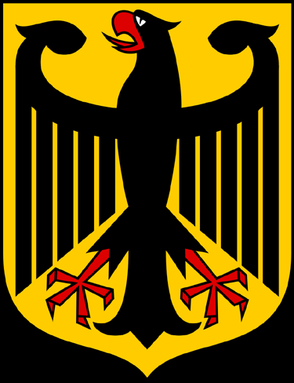
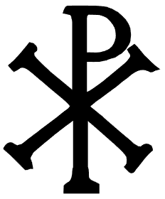
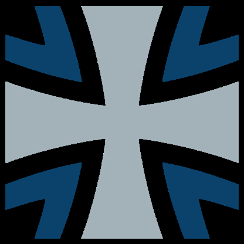
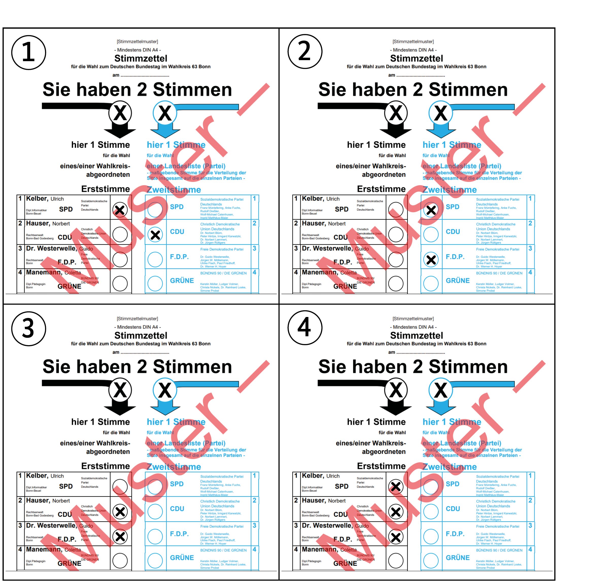
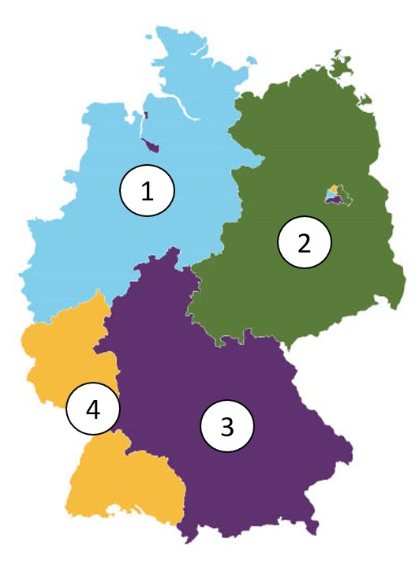
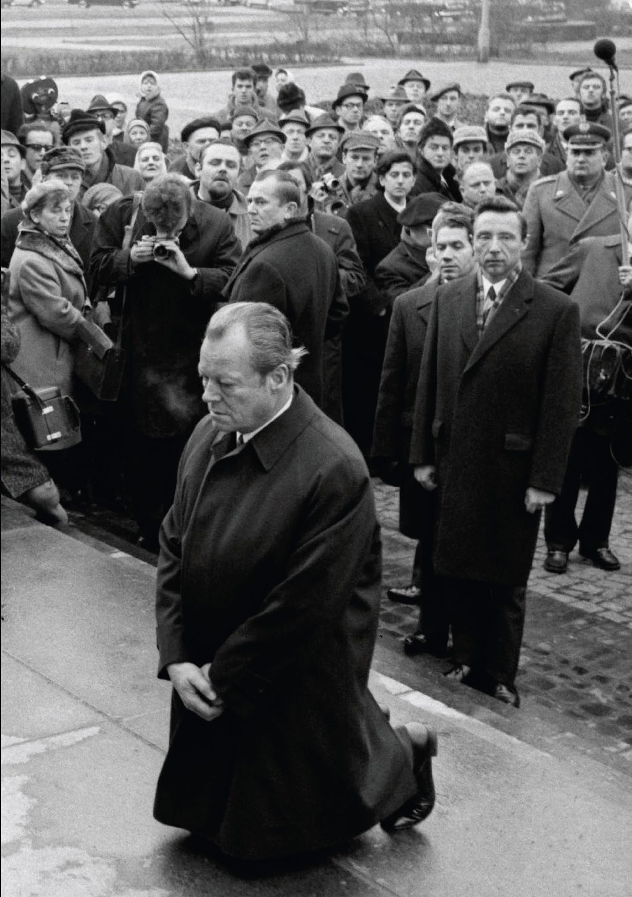
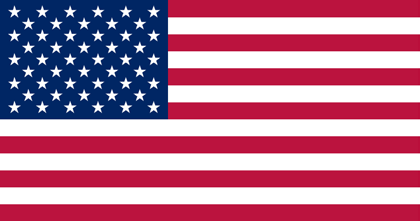
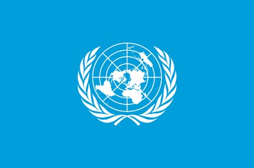
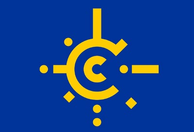

❓ General questions (Allgemeine Fragen)¶
‼️ In this section you need to know all of the questions. ‼️
Aufgabe 1
In Deutschland dürfen Menschen offen etwas gegen die Regierung sagen, weil…
- hier Religionsfreiheit gilt.
- die Menschen Steuern zahlen.
- die Menschen das Wahlrecht haben.
- hier Meinungsfreiheit gilt.
Aufgabe 2
In Deutschland können Eltern bis zum 14. Lebensjahr ihres Kindes entscheiden, ob es in der Schule am…
- Geschichtsunterricht teilnimmt.
- Religionsunterricht teilnimmt.
- Politikunterricht teilnimmt.
- Sprachunterricht teilnimmt.
Aufgabe 3
Deutschland ist ein Rechtsstaat. Was ist damit gemeint?
- Alle Einwohnerinnen/Einwohner und der Staat müssen sich an die Gesetze halten.
- Der Staat muss sich nicht an die Gesetze halten.
- Nur Deutsche müssen die Gesetze befolgen.
- Die Gerichte machen die Gesetze.
Aufgabe 4
Welches Recht gehört zu den Grundrechten in Deutschland?
- Waffenbesitz
- Faustrecht
- Meinungsfreiheit
- Selbstjustiz
Aufgabe 5
Wahlen in Deutschland sind frei. Was bedeutet das?
- Man darf Geld annehmen, wenn man dafür eine bestimmte Kandidatin/einen bestimmten Kandidaten wählt.
- Nur Personen, die noch nie im Gefängnis waren, dürfen wählen.
- Die Wählerin/der Wähler darf bei der Wahl weder beeinflusst noch zu einer bestimmten Stimmabgabe gezwungen werden und keine Nachteile durch die Wahl haben.
- Alle wahlberechtigten Personen müssen wählen.
Aufgabe 6
Wie heißt die deutsche Verfassung?
- Volksgesetz
- Bundesgesetz
- Deutsches Gesetz
- Grundgesetz
Aufgabe 7
Welches Recht gehört zu den Grundrechten, die nach der deutschen Verfassung garantiert werden? Das Recht auf…
- Glaubens- und Gewissensfreiheit
- Unterhaltung
- Arbeit
- Wohnung
Aufgabe 8
Was steht nicht im Grundgesetz von Deutschland?
- Die Würde des Menschen ist unantastbar.
- Alle sollen gleich viel Geld haben.
- Jeder Mensch darf seine Meinung sagen.
- Alle sind vor dem Gesetz gleich.
Aufgabe 9
Welches Grundrecht gilt in Deutschland nur für Ausländerinnen/Ausländer? Das Grundrecht auf…
- Schutz der Familie
- Menschenwürde
- Asyl
- Meinungsfreiheit
Aufgabe 10
Was ist mit dem deutschen Grundgesetz vereinbar?
- die Prügelstrafe
- die Folter
- die Todesstrafe
- die Geldstrafe
Aufgabe 11
Wie wird die Verfassung der Bundesrepublik Deutschland genannt?
- Grundgesetz
- Bundesverfassung
- Gesetzbuch
- Verfassungsvertrag
Aufgabe 12
Eine Partei im Deutschen Bundestag will die Pressefreiheit abschaffen. Ist das möglich?
- Ja, wenn mehr als die Hälfte der Abgeordneten im Bundestag dafür sind.
- Ja, aber dazu müssen zwei Drittel der Abgeordneten im Bundestag dafür sein.
- Nein, denn die Pressefreiheit ist ein Grundrecht. Sie kann nicht abgeschafft werden.
- Nein, denn nur der Bundesrat kann die Pressefreiheit abschaffen.
Aufgabe 13
Im Parlament steht der Begriff "Opposition" für…
- die regierenden Parteien.
- die Fraktion mit den meisten Abgeordneten.
- alle Parteien, die bei der letzten Wahl die 5%-Hürde erreichen konnten.
- alle Abgeordneten, die nicht zu der Regierungspartei/den Regierungsparteien gehören.
Aufgabe 14
Meinungsfreiheit in Deutschland heißt, dass ich…
- Passanten auf der Straße beschimpfen darf.
- meine Meinung im Internet äußern kann.
- Nazi-, Hamas- oder Islamischer Staat-Symbole öffentlich tragen darf.
- meine Meinung nur dann äußern darf, solange ich der Regierung nicht widerspreche.
Aufgabe 15
Was verbietet das deutsche Grundgesetz?
- Militärdienst
- Zwangsarbeit
- freie Berufswahl
- Arbeit im Ausland
Aufgabe 16
Wann ist die Meinungsfreiheit in Deutschland eingeschränkt?
- bei der öffentlichen Verbreitung falscher Behauptungen über einzelne Personen
- bei Meinungsäußerungen über die Bundesregierung
- bei Diskussionen über Religionen
- bei Kritik am Staat
Aufgabe 17
Die deutschen Gesetze verbieten…
- Meinungsfreiheit der Einwohnerinnen und Einwohner.
- Petitionen der Bürgerinnen und Bürger.
- Versammlungsfreiheit der Einwohnerinnen und Einwohner.
- Ungleichbehandlung der Bürgerinnen und Bürger durch den Staat.
Aufgabe 18
Welches Grundrecht ist in Artikel 1 des Grundgesetzes der Bundesrepublik Deutschland garantiert?
- die Unantastbarkeit der Menschenwürde
- das Recht auf Leben
- Religionsfreiheit
- Meinungsfreiheit
Aufgabe 19
Was versteht man unter dem Recht der "Freizügigkeit" in Deutschland?
- Man darf sich seinen Wohnort selbst aussuchen.
- Man kann seinen Beruf wechseln.
- Man darf sich für eine andere Religion entscheiden.
- Man darf sich in der Öffentlichkeit nur leicht bekleidet bewegen.
Aufgabe 20
Eine Partei in Deutschland verfolgt das Ziel, eine Diktatur zu errichten. Sie ist dann…
- tolerant.
- rechtsstaatlich orientiert.
- gesetzestreu.
- verfassungswidrig.
Aufgabe 21
Welches ist das Wappen der Bundesrepublik Deutschland?
| Bild 1 | Bild 2 | Bild 3 | Bild 4 |
|---|---|---|---|
|  |  |  |
- Bild 1
- Bild 2
- Bild 3
- Bild 4
Aufgabe 22
Was für eine Staatsform hat Deutschland?
- Monarchie
- Diktatur
- Republik
- Fürstentum
Aufgabe 23
In Deutschland sind die meisten Erwerbstätigen…
- in kleinen Familienunternehmen beschäftigt.
- ehrenamtlich für ein Bundesland tätig.
- selbstständig mit einer eigenen Firma tätig.
- bei einer Firma oder Behörde beschäftigt.
Aufgabe 24
Wie viele Bundesländer hat die Bundesrepublik Deutschland?
- 14
- 15
- 16
- 17
Aufgabe 25
Was ist kein Bundesland der Bundesrepublik Deutschland?
- Elsass-Lothringen
- Nordrhein-Westfalen
- Mecklenburg-Vorpommern
- Sachsen-Anhalt
Aufgabe 26
Deutschland ist…
- eine kommunistische Republik.
- ein demokratischer und sozialer Bundesstaat.
- eine kapitalistische und soziale Monarchie.
- ein sozialer und sozialistischer Bundesstaat.
Aufgabe 27
Deutschland ist…
- ein sozialistischer Staat.
- ein Bundesstaat.
- eine Diktatur.
- eine Monarchie.
Aufgabe 28
Wer wählt in Deutschland die Abgeordneten zum Bundestag?
- das Militär
- die Wirtschaft
- das wahlberechtigte Volk
- die Verwaltung
Aufgabe 29
Welches Tier ist das Wappentier der Bundesrepublik Deutschland?
- Löwe
- Adler
- Bär
- Pferd
Aufgabe 30
Was ist kein Merkmal unserer Demokratie?
- regelmäßige Wahlen
- Pressezensur
- Meinungsfreiheit
- verschiedene Parteien
Aufgabe 31
Die Zusammenarbeit von Parteien zur Bildung einer Regierung nennt man in Deutschland…
- Einheit.
- Koalition.
- Ministerium.
- Fraktion.
Aufgabe 32
Was ist keine staatliche Gewalt in Deutschland?
- Gesetzgebung
- Regierung
- Presse
- Rechtsprechung
Aufgabe 33
Welche Aussage ist richtig? In Deutschland…
- sind Staat und Religionsgemeinschaften voneinander getrennt.
- bilden die Religionsgemeinschaften den Staat.
- ist der Staat abhängig von den Religionsgemeinschaften.
- bilden Staat und Religionsgemeinschaften eine Einheit.
Aufgabe 34
Was ist Deutschland nicht?
- eine Demokratie
- ein Rechtsstaat
- eine Monarchie
- ein Sozialstaat
Aufgabe 35
Womit finanziert der deutsche Staat die Sozialversicherung?
- Kirchensteuer
- Sozialabgaben
- Spendengeldern
- Vereinsbeiträgen
Aufgabe 36
Welche Maßnahme schafft in Deutschland soziale Sicherheit?
- die Krankenversicherung
- die Autoversicherung
- die Gebäudeversicherung
- die Haftpflichtversicherung
Aufgabe 37
Wie werden die Regierungschefinnen/Regierungschefs der meisten Bundesländer in Deutschland genannt?
- Erste Ministerin/Erster Minister
- Premierministerin/Premierminister
- Senatorin/Senator
- Ministerpräsidentin/Ministerpräsident
Aufgabe 38
Die Bundesrepublik Deutschland ist ein demokratischer und sozialer…
- Staatenverbund.
- Bundesstaat.
- Staatenbund.
- Zentralstaat.
Aufgabe 39
Was hat jedes deutsche Bundesland?
- eine eigene Außenministerin/einen eigenen Außenminister
- eine eigene Währung
- eine eigene Armee
- eine eigene Regierung
Aufgabe 40
Mit welchen Worten beginnt die deutsche Nationalhymne?
- Völker, hört die Signale…
- Einigkeit und Recht und Freiheit…
- Freude schöner Götterfunken…
- Deutschland einig Vaterland…
Aufgabe 41
Warum gibt es in einer Demokratie mehr als eine Partei?
- weil dadurch die unterschiedlichen Meinungen der Bürgerinnen und Bürger vertreten werden
- damit Bestechung in der Politik begrenzt wird
- um politische Demonstrationen zu verhindern
- um wirtschaftlichen Wettbewerb anzuregen
Aufgabe 42
Wer beschließt in Deutschland ein neues Gesetz?
- die Regierung
- das Parlament
- die Gerichte
- die Polizei
Aufgabe 43
Wann kann in Deutschland eine Partei verboten werden?
- wenn ihr Wahlkampf zu teuer ist
- wenn sie gegen die Verfassung kämpft
- wenn sie Kritik am Staatsoberhaupt äußert
- wenn ihr Programm eine neue Richtung vorschlägt
Aufgabe 44
Wen kann man als Bürgerin/Bürger in Deutschland nicht direkt wählen?
- Abgeordnete des EU-Parlaments
- Die Bundespräsidentin/den Bundespräsidenten
- Landtagsabgeordnete
- Bundestagsabgeordnete
Aufgabe 45
Zu welcher Versicherung gehört die Pflegeversicherung?
- Sozialversicherung
- Unfallversicherung
- Hausratsversicherung
- Haftpflicht- und Feuerversicherung
Aufgabe 46
Der deutsche Staat hat viele Aufgaben. Welche Aufgabe gehört dazu?
- Er baut Straßen und Schulen.
- Er verkauft Lebensmittel und Kleidung.
- Er versorgt alle Einwohnerinnen und Einwohner kostenlos mit Zeitungen.
- Er produziert Autos und Busse.
Aufgabe 47
Der deutsche Staat hat viele Aufgaben. Welche Aufgabe gehört nicht dazu?
- Er bezahlt für alle Staatsangehörigen Urlaubsreisen.
- Er zahlt Kindergeld.
- Er unterstützt Museen.
- Er fördert Sportlerinnen und Sportler.
Aufgabe 48
Welches Organ gehört nicht zu den Verfassungsorganen Deutschlands?
- der Bundesrat
- die Bundespräsidentin/der Bundespräsident
- die Bürgerversammlung
- die Regierung
Aufgabe 49
Wer bestimmt in Deutschland die Schulpolitik?
- die Lehrer und Lehrerinnen
- die Bundesländer
- das Familienministerium
- die Universitäten
Aufgabe 50
Die Wirtschaftsform in Deutschland nennt man…
- freie Zentralwirtschaft.
- soziale Marktwirtschaft.
- gelenkte Zentralwirtschaft.
- Planwirtschaft.
Aufgabe 51
Zu einem demokratischen Rechtsstaat gehört es nicht, dass…
- Menschen sich kritisch über die Regierung äußern können.
- Bürger friedlich demonstrieren gehen dürfen.
- Menschen von einer Privatpolizei ohne Grund verhaftet werden.
- jemand ein Verbrechen begeht und deshalb verhaftet wird.
Aufgabe 52
Was bedeutet "Volkssouveränität"? Alle Staatsgewalt geht vom…
- Volke aus.
- Bundestag aus.
- preußischen König aus.
- Bundesverfassungsgericht aus.
Aufgabe 53
Was bedeutet "Rechtsstaat" in Deutschland?
- Der Staat hat Recht.
- Es gibt nur rechte Parteien.
- Die Bürgerinnen und Bürger entscheiden über Gesetze.
- Der Staat muss die Gesetze einhalten.
Aufgabe 54
Was ist keine staatliche Gewalt in Deutschland?
- Legislative
- Judikative
- Exekutive
- Direktive
Aufgabe 55
Was zeigt dieses Bild?
- den Bundestagssitz in Berlin
- das Bundesverfassungsgericht in Karlsruhe
- das Bundesratsgebäude in Berlin
- das Bundeskanzleramt in Berlin
Aufgabe 56
Welches Amt gehört in Deutschland zur Gemeindeverwaltung?
- Pfarramt
- Ordnungsamt
- Finanzamt
- Auswärtiges Amt
Aufgabe 57
Wer wird meistens zur Präsidentin/zum Präsidenten des Deutschen Bundestages gewählt?
- die/der älteste Abgeordnete im Parlament
- die Ministerpräsidentin/der Ministerpräsident des größten Bundeslandes
- eine ehemalige Bundeskanzlerin/ein ehemaliger Bundeskanzler
- eine Abgeordnete/ein Abgeordneter der stärksten Fraktion
Aufgabe 58
Wer ernennt in Deutschland die Ministerinnen/die Minister der Bundesregierung?
- die Präsidentin/der Präsident des Bundesverfassungsgerichtes
- die Bundespräsidentin/der Bundespräsident
- die Bundesratspräsidentin/der Bundesratspräsident
- die Bundestagspräsidentin/der Bundestagspräsident
Aufgabe 59
Vor wie vielen Jahren gab es erstmals eine jüdische Gemeinde auf dem Gebiet des heutigen Deutschlands?
- vor etwa 300 Jahren
- vor etwa 700 Jahren
- vor etwa 1150 Jahren
- vor etwa 1700 Jahren
Aufgabe 60
In Deutschland gehören der Bundestag und der Bundesrat zur…
- Exekutive.
- Legislative.
- Direktive.
- Judikative.
Aufgabe 61
Was bedeutet "Volkssouveränität"?
- Die Königin/der König herrscht über das Volk.
- Das Bundesverfassungsgericht steht über der Verfassung.
- Die Interessenverbände üben die Souveränität zusammen mit der Regierung aus.
- Die Staatsgewalt geht vom Volke aus.
Aufgabe 62
Wenn das Parlament eines deutschen Bundeslandes gewählt wird, nennt man das…
- Kommunalwahl
- Landtagswahl
- Europawahl
- Bundestagswahl
Aufgabe 63
Was gehört in Deutschland nicht zur Exekutive?
- die Polizei
- die Gerichte
- das Finanzamt
- die Ministerien
Aufgabe 64
Die Bundesrepublik Deutschland ist heute gegliedert in…
- vier Besatzungszonen.
- einen Oststaat und einen Weststaat.
- 16 Kantone.
- Bund, Länder und Kommunen.
Aufgabe 65
Es gehört nicht zu den Aufgaben des Deutschen Bundestages,…
- Gesetze zu entwerfen.
- die Bundesregierung zu kontrollieren.
- die Bundeskanzlerin/den Bundeskanzler zu wählen.
- das Bundeskabinett zu bilden.
Aufgabe 66
Welche Städte haben die größten jüdischen Gemeinden in Deutschland?
- Berlin und München
- Hamburg und Essen
- Nürnberg und Stuttgart
- Worms und Speyer
Aufgabe 67
Was ist in Deutschland vor allem eine Aufgabe der Bundesländer?
- Verteidigungspolitik
- Außenpolitik
- Wirtschaftspolitik
- Schulpolitik
Aufgabe 68
Warum kontrolliert der Staat in Deutschland das Schulwesen?
- weil es in Deutschland nur staatliche Schulen gibt
- weil alle Schülerinnen und Schüler einen Schulabschluss haben müssen
- weil es in den Bundesländern verschiedene Schulen gibt
- weil es nach dem Grundgesetz seine Aufgabe ist
Aufgabe 69
Die Bundesrepublik Deutschland hat einen dreistufigen Verwaltungsaufbau. Wie heißt die unterste politische Stufe?
- Stadträte
- Landräte
- Gemeinden
- Bezirksämter
Aufgabe 70
Der deutsche Bundespräsident Gustav Heinemann gibt Helmut Schmidt 1974 die Ernennungsurkunde zum deutschen Bundeskanzler. Was gehört zu den Aufgaben der deutschen Bundespräsidentin/des deutschen Bundespräsidenten?
- Sie/Er führt die Regierungsgeschäfte.
- Sie/Er kontrolliert die Regierungspartei.
- Sie/Er wählt die Ministerinnen/Minister aus.
- Sie/Er schlägt die Kanzlerin/den Kanzler zur Wahl vor.
Aufgabe 71
Wo hält sich die deutsche Bundeskanzlerin/der deutsche Bundeskanzler am häufigsten auf? Am häufigsten ist sie/er…
- in Bonn, weil sich dort das Bundeskanzleramt und der Bundestag befinden.
- auf Schloss Meseberg, dem Gästehaus der Bundesregierung, um Staatsgäste zu empfangen.
- auf Schloss Bellevue, dem Amtssitz der Bundespräsidentin/des Bundespräsidenten, um Staatsgäste zu empfangen.
- in Berlin, weil sich dort das Bundeskanzleramt und der Bundestag befinden.
Aufgabe 72
Wie heißt die jetzige Bundeskanzlerin/der jetzige Bundeskanzler von Deutschland?
- Gerhard Schröder
- Angela Merkel
- Ursula von der Leyen
- Friedrich Merz
Aufgabe 73
Die beiden größten Fraktionen im Deutschen Bundestag heißen zurzeit…
- CDU/CSU und AfD.
- Die Linke und Bündnis 90/Die Grünen.
- Bündnis 90/Die Grünen und SPD.
- Die Linke und CDU/CSU.
Aufgabe 74
Wie heißt das Parlament für ganz Deutschland?
- Bundesversammlung
- Volkskammer
- Bundestag
- Bundesgerichtshof
Aufgabe 75
Wie heißt Deutschlands heutiges Staatsoberhaupt?
- Frank-Walter Steinmeier
- Bärbel Bas
- Bodo Ramelow
- Joachim Gauck
Aufgabe 76
Was bedeutet die Abkürzung CDU in Deutschland?
- Christliche Deutsche Union
- Club Deutscher Unternehmer
- Christlicher Deutscher Umweltschutz
- Christlich Demokratische Union
Aufgabe 77
Was ist die Bundeswehr?
- die deutsche Polizei
- ein deutscher Hafen
- eine deutsche Bürgerinitiative
- die deutsche Armee
Aufgabe 78
Was bedeutet die Abkürzung SPD?
- Sozialistische Partei Deutschlands
- Sozialpolitische Partei Deutschlands
- Sozialdemokratische Partei Deutschlands
- Sozialgerechte Partei Deutschlands
Aufgabe 79
Was bedeutet die Abkürzung FDP in Deutschland?
- Friedliche Demonstrative Partei
- Freie Deutschland Partei
- Führende Demokratische Partei
- Freie Demokratische Partei
Aufgabe 80
Welches Gericht in Deutschland ist zuständig für die Auslegung des Grundgesetzes?
- Oberlandesgericht
- Amtsgericht
- Bundesverfassungsgericht
- Verwaltungsgericht
Aufgabe 81
Wer wählt die Bundeskanzlerin/den Bundeskanzler in Deutschland?
- der Bundesrat
- die Bundesversammlung
- das Volk
- der Bundestag
Aufgabe 82
Wer leitet das deutsche Bundeskabinett?
- die Bundestagspräsidentin/der Bundestagspräsident
- die Bundespräsidentin/der Bundespräsident
- die Bundesratspräsidentin/der Bundesratspräsident
- die Bundeskanzlerin/der Bundeskanzler
Aufgabe 83
Wer wählt die deutsche Bundeskanzlerin/den deutschen Bundeskanzler?
- das Volk
- die Bundesversammlung
- der Bundestag
- die Bundesregierung
Aufgabe 84
Welche Hauptaufgabe hat die deutsche Bundespräsidentin/der deutsche Bundespräsident? Sie/Er…
- regiert das Land.
- entwirft die Gesetze.
- repräsentiert das Land.
- überwacht die Einhaltung der Gesetze.
Aufgabe 85
Wer bildet den deutschen Bundesrat?
- die Abgeordneten des Bundestages
- die Ministerinnen und Minister der Bundesregierung
- die Regierungsvertreter der Bundesländer
- die Parteimitglieder
Aufgabe 86
Wer wählt in Deutschland die Bundespräsidentin/den Bundespräsidenten?
- die Bundesversammlung
- der Bundesrat
- das Bundesparlament
- das Bundesverfassungsgericht
Aufgabe 87
Wer ist das Staatsoberhaupt der Bundesrepublik Deutschland?
- die Bundeskanzlerin/der Bundeskanzler
- die Bundespräsidentin/der Bundespräsident
- die Bundesratspräsidentin/der Bundesratspräsident
- die Bundestagspräsidentin/der Bundestagspräsident
Aufgabe 88
Die parlamentarische Opposition im Deutschen Bundestag…
- kontrolliert die Regierung.
- entscheidet, wer Bundesministerin/Bundesminister wird.
- bestimmt, wer im Bundesrat sitzt.
- schlägt die Regierungschefinnen/Regierungschefs der Länder vor.
Aufgabe 89
Wie nennt man in Deutschland die Vereinigung von Abgeordneten einer Partei im Parlament?
- Verband
- Ältestenrat
- Fraktion
- Opposition
Aufgabe 90
Die deutschen Bundesländer wirken an der Gesetzgebung des Bundes mit durch…
- den Bundesrat.
- die Bundesversammlung.
- den Bundestag.
- die Bundesregierung.
Aufgabe 91
In Deutschland kann ein Regierungswechsel in einem Bundesland Auswirkungen auf die Bundespolitik haben. Das Regieren wird…
- schwieriger, wenn sich dadurch die Mehrheit im Bundestag ändert.
- leichter, wenn dadurch neue Parteien in den Bundesrat kommen.
- schwieriger, wenn dadurch die Mehrheit im Bundesrat verändert wird.
- leichter, wenn es sich um ein reiches Bundesland handelt.
Aufgabe 92
Was bedeutet die Abkürzung CSU in Deutschland?
- Christlich Sichere Union
- Christlich Süddeutsche Union
- Christlich Sozialer Unternehmerverband
- Christlich Soziale Union
Aufgabe 93
Je mehr "Zweitstimmen" eine Partei bei einer Bundestagswahl bekommt, desto…
- weniger Erststimmen kann sie haben.
- mehr Direktkandidaten der Partei ziehen ins Parlament ein.
- größer ist das Risiko, eine Koalition bilden zu müssen.
- mehr Sitze erhält die Partei im Parlament.
Aufgabe 94
Ab welchem Alter darf man in Deutschland an der Wahl zum Deutschen Bundestag teilnehmen?
- 16
- 18
- 21
- 23
Aufgabe 95
Was gilt für die meisten Kinder in Deutschland?
- Wahlpflicht
- Schulpflicht
- Schweigepflicht
- Religionspflicht
Aufgabe 96
Wie kann jemand, der den Holocaust leugnet, bestraft werden?
- Kürzung sozialer Leistungen
- bis zu 100 Sozialstunden
- gar nicht, Holocaustleugnung ist erlaubt
- mit Freiheitsstrafe bis zu fünf Jahren oder mit Geldstrafe
Aufgabe 97
Was bezahlt man in Deutschland automatisch, wenn man fest angestellt ist?
- Sozialversicherung
- Sozialhilfe
- Kindergeld
- Wohngeld
Aufgabe 98
Wenn Abgeordnete im Deutschen Bundestag ihre Fraktion wechseln,…
- dürfen sie nicht mehr an den Sitzungen des Parlaments teilnehmen.
- kann die Regierung ihre Mehrheit verlieren.
- muss die Bundespräsidentin/der Bundespräsident zuvor ihr/sein Einverständnis geben.
- dürfen die Wählerinnen/Wähler dieser Abgeordneten noch einmal wählen.
Aufgabe 99
Wer bezahlt in Deutschland die Sozialversicherungen?
- Arbeitgeberinnen/Arbeitgeber und Arbeitnehmerinnen/Arbeitnehmer
- nur Arbeitnehmerinnen/Arbeitnehmer
- alle Staatsangehörigen
- nur Arbeitgeberinnen/Arbeitgeber
Aufgabe 100
Was gehört nicht zur gesetzlichen Sozialversicherung?
- die Lebensversicherung
- die gesetzliche Rentenversicherung
- die Arbeitslosenversicherung
- die Pflegeversicherung
Aufgabe 101
Gewerkschaften sind Interessenverbände der…
- Jugendlichen.
- Arbeitnehmerinnen und Arbeitnehmer.
- Rentnerinnen und Rentner.
- Arbeitgeberinnen und Arbeitgeber.
Aufgabe 102
Womit kann man in der Bundesrepublik Deutschland geehrt werden, wenn man auf politischem, wirtschaftlichem, kulturellem, geistigem oder sozialem Gebiet eine besondere Leistung erbracht hat? Mit dem…
- Bundesverdienstkreuz
- Bundesadler
- Vaterländischen Verdienstorden
- Ehrentitel "Held der Deutschen Demokratischen Republik"
Aufgabe 103
Was wird in Deutschland als "Ampelkoalition" bezeichnet? Die Zusammenarbeit…
- der Bundestagsfraktionen von CDU und CSU
- von SPD, FDP und Bündnis 90/Die Grünen in einer Regierung
- von CSU, Die LINKE und Bündnis 90/Die Grünen in einer Regierung
- der Bundestagsfraktionen von CDU und SPD
Aufgabe 104
Eine Frau in Deutschland verliert ihre Arbeit. Was darf nicht der Grund für diese Entlassung sein?
- Die Frau ist lange krank und arbeitsunfähig.
- Die Frau kam oft zu spät zur Arbeit.
- Die Frau erledigt private Sachen während der Arbeitszeit.
- Die Frau bekommt ein Kind und ihr Chef weiß das.
Aufgabe 105
Was ist eine Aufgabe von Wahlhelferinnen/Wahlhelfern in Deutschland?
- Sie helfen alten Menschen bei der Stimmabgabe in der Wahlkabine.
- Sie schreiben die Wahlbenachrichtigungen vor der Wahl.
- Sie geben Zwischenergebnisse an die Medien weiter.
- Sie zählen die Stimmen nach dem Ende der Wahl.
Aufgabe 106
In Deutschland helfen ehrenamtliche Wahlhelferinnen und Wahlhelfer bei den Wahlen. Was ist eine Aufgabe von Wahlhelferinnen/Wahlhelfern?
- Sie helfen Kindern und alten Menschen beim Wählen.
- Sie schreiben Karten und Briefe mit der Angabe des Wahllokals.
- Sie geben Zwischenergebnisse an Journalisten weiter.
- Sie zählen die Stimmen nach dem Ende der Wahl.
Aufgabe 107
Für wie viele Jahre wird der Bundestag in Deutschland gewählt?
- 2 Jahre
- 4 Jahre
- 6 Jahre
- 8 Jahre
Aufgabe 108
Bei einer Bundestagswahl in Deutschland darf jede/jeder wählen, die/der…
- in der Bundesrepublik Deutschland wohnt und wählen möchte.
- Bürgerin/Bürger der Bundesrepublik Deutschland ist und mindestens 18 Jahre alt ist.
- seit mindestens 3 Jahren in der Bundesrepublik Deutschland lebt.
- Bürgerin/Bürger der Bundesrepublik Deutschland ist und mindestens 21 Jahre alt ist.
Aufgabe 109
Wie oft gibt es normalerweise Bundestagswahlen in Deutschland?
- alle drei Jahre
- alle vier Jahre
- alle fünf Jahre
- alle sechs Jahre
Aufgabe 110
Für wie viele Jahre wird der Bundestag in Deutschland gewählt?
- 2 Jahre
- 3 Jahre
- 4 Jahre
- 5 Jahre
Aufgabe 111
Welche Handlungen mit Bezug auf den Staat Israel sind in Deutschland verboten?
- die Politik Israels öffentlich kritisieren
- das Aufhängen einer israelischen Flagge auf dem Privatgrundstück
- eine Diskussion über die Politik Israels
- der öffentliche Aufruf zur Vernichtung Israels
Aufgabe 112
Die Wahlen in Deutschland sind…
- speziell.
- geheim.
- berufsbezogen.
- geschlechtsabhängig.
Aufgabe 113
Wahlen in Deutschland gewinnt die Partei, die…
- die meisten Stimmen bekommt.
- die meisten Männer mehrheitlich gewählt haben.
- die meisten Stimmen bei den Arbeiterinnen/Arbeitern bekommen hat.
- die meisten Erststimmen für ihre Kanzlerkandidatin/ihren Kanzlerkandidaten erhalten hat.
Aufgabe 114
An demokratischen Wahlen in Deutschland teilzunehmen ist…
- eine Pflicht.
- ein Recht.
- ein Zwang.
- eine Last.
Aufgabe 115
Was bedeutet "aktives Wahlrecht" in Deutschland?
- Man kann gewählt werden.
- Man muss wählen gehen.
- Man kann wählen.
- Man muss zur Auszählung der Stimmen gehen.
Aufgabe 116
Wenn Sie bei einer Bundestagswahl in Deutschland wählen dürfen, heißt das…
- aktive Wahlkampagne.
- aktives Wahlverfahren.
- aktiver Wahlkampf.
- aktives Wahlrecht.
Aufgabe 117
Wie viel Prozent der Zweitstimmen müssen Parteien mindestens bekommen, um in den Deutschen Bundestag gewählt zu werden?
- 3%
- 4%
- 5%
- 6%
Aufgabe 118
Wer darf bei den rund 40 jüdischen Makkabi-Sportvereinen Mitglied werden?
- nur Deutsche
- nur Israelis
- nur religiöse Menschen
- alle Menschen
Aufgabe 119
Wahlen in Deutschland sind frei. Was bedeutet das?
- Alle verurteilten Straftäterinnen/Straftäter dürfen nicht wählen.
- Wenn ich wählen gehen möchte, muss meine Arbeitgeberin/mein Arbeitgeber mir frei geben.
- Jede Person kann ohne Zwang entscheiden, ob sie wählen möchte und wen sie wählen möchte.
- Ich kann frei entscheiden, wo ich wählen gehen möchte.
Aufgabe 120
Das Wahlsystem in Deutschland ist ein…
- Zensuswahlrecht.
- Dreiklassenwahlrecht.
- Mehrheits- und Verhältniswahlrecht.
- allgemeines Männerwahlrecht.
Aufgabe 121
Eine Partei möchte in den Deutschen Bundestag. Sie muss aber einen Mindestanteil an Wählerstimmen haben. Das heißt…
- 5%-Hürde.
- Zulassungsgrenze.
- Basiswert.
- Richtlinie.
Aufgabe 122
Welchem Grundsatz unterliegen Wahlen in Deutschland? Wahlen in Deutschland sind…
- frei, gleich, geheim.
- offen, sicher, frei.
- geschlossen, gleich, sicher.
- sicher, offen, freiwillig.
Aufgabe 123
Was ist in Deutschland die "5%-Hürde"?
- Abstimmungsregelung im Bundestag für kleine Parteien
- Anwesenheitskontrolle im Bundestag für Abstimmungen
- Mindestanteil an Wählerstimmen, um ins Parlament zu kommen
- Anwesenheitskontrolle im Bundesrat für Abstimmungen
Aufgabe 124
Die Bundestagswahl in Deutschland ist die Wahl…
- der Bundeskanzlerin/des Bundeskanzlers.
- der Parlamente der Länder.
- des Parlaments für Deutschland.
- der Bundespräsidentin/des Bundespräsidenten.
Aufgabe 125
In einer Demokratie ist eine Funktion von regelmäßigen Wahlen,…
- die Bürgerinnen und Bürger zu zwingen, ihre Stimme abzugeben.
- nach dem Willen der Wählermehrheit den Wechsel der Regierung zu ermöglichen.
- im Land bestehende Gesetze beizubehalten.
- den Armen mehr Macht zu geben.
Aufgabe 126
Was bekommen wahlberechtigte Bürgerinnen und Bürger in Deutschland vor einer Wahl?
- eine Wahlbenachrichtigung von der Gemeinde
- eine Wahlerlaubnis von der Bundespräsidentin/von dem Bundespräsidenten
- eine Benachrichtigung von der Bundesversammlung
- eine Benachrichtigung vom Pfarramt
Aufgabe 127
Warum gibt es die 5%-Hürde im Wahlgesetz der Bundesrepublik Deutschland? Es gibt sie, weil…
- die Programme von vielen kleinen Parteien viele Gemeinsamkeiten haben.
- die Bürgerinnen und Bürger bei vielen kleinen Parteien die Orientierung verlieren können.
- viele kleine Parteien die Regierungsbildung erschweren.
- die kleinen Parteien nicht so viel Geld haben, um die Politikerinnen und Politiker zu bezahlen.
Aufgabe 128
Parlamentsmitglieder, die von den Bürgerinnen und Bürgern gewählt werden, nennt man…
- Abgeordnete.
- Kanzlerinnen/Kanzler.
- Botschafterinnen/Botschafter.
- Ministerpräsidentinnen/Ministerpräsidenten.
Aufgabe 129
Vom Volk gewählt wird in Deutschland…
- die Bundeskanzlerin/der Bundeskanzler.
- die Ministerpräsidentin/der Ministerpräsident eines Bundeslandes.
- der Bundestag.
- die Bundespräsidentin/der Bundespräsident.
Aufgabe 130
Welcher Stimmzettel wäre bei einer Bundestagswahl gültig?

- 1
- 2
- 3
- 4
Aufgabe 131
In Deutschland ist eine Bürgermeisterin/ein Bürgermeister…
- die Leiterin/der Leiter einer Schule.
- die Chefin/der Chef einer Bank.
- das Oberhaupt einer Gemeinde.
- die/der Vorsitzende einer Partei.
Aufgabe 132
Viele Menschen in Deutschland arbeiten in ihrer Freizeit ehrenamtlich. Was bedeutet das?
- Sie arbeiten als Soldatinnen/Soldaten.
- Sie arbeiten freiwillig und unbezahlt in Vereinen und Verbänden.
- Sie arbeiten in der Bundesregierung.
- Sie arbeiten in einem Krankenhaus und verdienen dabei Geld.
Aufgabe 133
Was ist bei Bundestags- und Landtagswahlen in Deutschland erlaubt?
- Der Ehemann wählt für seine Frau mit.
- Man kann durch Briefwahl seine Stimme abgeben.
- Man kann am Wahltag telefonisch seine Stimme abgeben.
- Kinder ab dem Alter von 14 Jahren dürfen wählen.
Aufgabe 134
Man will die Buslinie abschaffen, mit der Sie immer zur Arbeit fahren. Was können Sie machen, um die Buslinie zu erhalten?
- Ich beteilige mich an einer Bürgerinitiative für die Erhaltung der Buslinie oder gründe selber eine Initiative.
- Ich werde Mitglied in einem Sportverein und trainiere Radfahren.
- Ich wende mich an das Finanzamt, weil ich als Steuerzahlerin/Steuerzahler ein Recht auf die Buslinie habe.
- Ich schreibe einen Brief an das Forstamt der Gemeinde.
Aufgabe 135
Wen vertreten die Gewerkschaften in Deutschland?
- große Unternehmen
- kleine Unternehmen
- Selbstständige
- Arbeitnehmerinnen und Arbeitnehmer
Aufgabe 136
Sie gehen in Deutschland zum Arbeitsgericht bei…
- falscher Nebenkostenabrechnung.
- ungerechtfertigter Kündigung durch Ihre Chefin/Ihren Chef.
- Problemen mit den Nachbarinnen/Nachbarn.
- Schwierigkeiten nach einem Verkehrsunfall.
Aufgabe 137
Welches Gericht ist in Deutschland bei Konflikten in der Arbeitswelt zuständig?
- das Familiengericht
- das Strafgericht
- das Arbeitsgericht
- das Amtsgericht
Aufgabe 138
Was kann ich in Deutschland machen, wenn mir meine Arbeitgeberin/mein Arbeitgeber zu Unrecht gekündigt hat?
- weiterarbeiten und freundlich zur Chefin/zum Chef sein
- ein Mahnverfahren gegen die Arbeitgeberin/den Arbeitgeber führen
- Kündigungsschutzklage erheben
- die Arbeitgeberin/den Arbeitgeber bei der Polizei anzeigen
Aufgabe 139
Wann kommt es in Deutschland zu einem Prozess vor Gericht? Wenn jemand…
- zu einer anderen Religion übertritt.
- eine Straftat begangen hat und angeklagt wird.
- eine andere Meinung als die der Regierung vertritt.
- sein Auto falsch geparkt hat und es abgeschleppt wird.
Aufgabe 140
Was macht eine Schöffin/ein Schöffe in Deutschland? Sie/Er…
- entscheidet mit Richterinnen/Richtern über Schuld und Strafe.
- gibt Bürgerinnen/Bürgern rechtlichen Rat.
- stellt Urkunden aus.
- verteidigt die Angeklagte/den Angeklagten.
Aufgabe 141
Wer berät in Deutschland Personen bei Rechtsfragen und vertritt sie vor Gericht?
- eine Rechtsanwältin/ein Rechtsanwalt
- eine Richterin/ein Richter
- eine Schöffin/ein Schöffe
- eine Staatsanwältin/ein Staatsanwalt
Aufgabe 142
Was ist die Hauptaufgabe einer Richterin/eines Richters in Deutschland? Eine Richterin/ein Richter…
- vertritt Bürgerinnen und Bürger vor einem Gericht.
- arbeitet an einem Gericht und spricht Urteile.
- ändert Gesetze.
- betreut Jugendliche vor Gericht.
Aufgabe 143
Eine Richterin/ein Richter in Deutschland gehört zur…
- Judikative.
- Exekutive.
- Operative.
- Legislative.
Aufgabe 144
Eine Richterin/ein Richter gehört in Deutschland zur…
- vollziehenden Gewalt.
- rechtsprechenden Gewalt.
- planenden Gewalt.
- gesetzgebenden Gewalt.
Aufgabe 145
In Deutschland wird die Staatsgewalt geteilt. Für welche Staatsgewalt arbeitet eine Richterin/ein Richter? Für die…
- Judikative
- Exekutive
- Presse
- Legislative
Aufgabe 146
Wie nennt man in Deutschland ein Verfahren vor einem Gericht?
- Programm
- Prozedur
- Protokoll
- Prozess
Aufgabe 147
Was ist die Arbeit einer Richterin/eines Richters in Deutschland?
- Deutschland regieren
- Recht sprechen
- Pläne erstellen
- Gesetze erlassen
Aufgabe 148
Was ist eine Aufgabe der Polizei in Deutschland?
- das Land zu verteidigen
- die Bürgerinnen und Bürger abzuhören
- die Gesetze zu beschließen
- die Einhaltung von Gesetzen zu überwachen
Aufgabe 149
Was ist ein Beispiel für antisemitisches Verhalten?
- ein jüdisches Fest besuchen
- die israelische Regierung kritisieren
- den Holocaust leugnen
- gegen Juden Fußball spielen.
Aufgabe 150
Eine Gerichtsschöffin/ein Gerichtsschöffe in Deutschland ist…
- die Stellvertreterin/der Stellvertreter des Stadtoberhaupts.
- eine ehrenamtliche Richterin/ein ehrenamtlicher Richter.
- ein Mitglied eines Gemeinderats.
- eine Person, die Jura studiert hat.
Aufgabe 151
Wer baute die Mauer in Berlin?
- Großbritannien
- die DDR
- die Bundesrepublik Deutschland
- die USA
Aufgabe 152
Wann waren die Nationalsozialisten mit Adolf Hitler in Deutschland an der Macht?
- 1918 bis 1923
- 1932 bis 1950
- 1933 bis 1945
- 1945 bis 1989
Aufgabe 153
Was war am 8. Mai 1945?
- Tod Adolf Hitlers
- Beginn des Berliner Mauerbaus
- Wahl von Konrad Adenauer zum Bundeskanzler
- Ende des Zweiten Weltkriegs in Europa
Aufgabe 154
Wann war der Zweite Weltkrieg zu Ende?
- 1933
- 1945
- 1949
- 1961
Aufgabe 155
Wann waren die Nationalsozialisten in Deutschland an der Macht?
- 1888 bis 1918
- 1921 bis 1934
- 1933 bis 1945
- 1949 bis 1963
Aufgabe 156
In welchem Jahr wurde Hitler Reichskanzler?
- 1923
- 1927
- 1933
- 1936
Aufgabe 157
Die Nationalsozialisten mit Adolf Hitler errichteten 1933 in Deutschland…
- eine Diktatur.
- einen demokratischen Staat.
- eine Monarchie.
- ein Fürstentum.
Aufgabe 158
Das "Dritte Reich" war eine…
- Diktatur.
- Demokratie.
- Monarchie.
- Räterepublik.
Aufgabe 159
Was gab es in Deutschland nicht während der Zeit des Nationalsozialismus?
- freie Wahlen
- Pressezensur
- willkürliche Verhaftungen
- Verfolgung von Juden
Aufgabe 160
Welcher Krieg dauerte von 1939 bis 1945?
- der Erste Weltkrieg
- der Zweite Weltkrieg
- der Vietnamkrieg
- der Golfkrieg
Aufgabe 161
Was kennzeichnete den NS-Staat? Eine Politik…
- des staatlichen Rassismus
- der Meinungsfreiheit
- der allgemeinen Religionsfreiheit
- der Entwicklung der Demokratie
Aufgabe 162
Claus Schenk Graf von Stauffenberg wurde bekannt durch…
- eine Goldmedaille bei den Olympischen Spielen 1936.
- den Bau des Reichstagsgebäudes.
- den Aufbau der Wehrmacht.
- das Attentat auf Hitler am 20. Juli 1944.
Aufgabe 163
In welchem Jahr zerstörten die Nationalsozialisten Synagogen und jüdische Geschäfte in Deutschland?
- 1925
- 1930
- 1938
- 1945
Aufgabe 164
Was passierte am 9. November 1938 in Deutschland?
- Mit dem Angriff auf Polen beginnt der Zweite Weltkrieg.
- Die Nationalsozialisten verlieren eine Wahl und lösen den Reichstag auf.
- Jüdische Geschäfte und Synagogen werden durch Nationalsozialisten und ihre Anhänger zerstört.
- Hitler wird Reichspräsident und lässt alle Parteien verbieten.
Aufgabe 165
Wie hieß der erste Bundeskanzler der Bundesrepublik Deutschland?
- Konrad Adenauer
- Kurt Georg Kiesinger
- Helmut Schmidt
- Willy Brandt
Aufgabe 166
Bei welchen Demonstrationen in Deutschland riefen die Menschen "Wir sind das Volk"?
- beim Arbeiteraufstand 1953 in der DDR
- bei den Demonstrationen 1968 in der Bundesrepublik Deutschland
- bei den Anti-Atomkraft-Demonstrationen 1985 in der Bundesrepublik Deutschland
- bei den Montagsdemonstrationen 1989 in der DDR
Aufgabe 167
Welche Länder wurden nach dem Zweiten Weltkrieg in Deutschland als "Alliierte Besatzungsmächte" bezeichnet?
- Sowjetunion, Großbritannien, Polen, Schweden
- Frankreich, Sowjetunion, Italien, Japan
- USA, Sowjetunion, Spanien, Portugal
- USA, Sowjetunion, Großbritannien, Frankreich
Aufgabe 168
Welches Land war keine "Alliierte Besatzungsmacht" in Deutschland?
- USA
- Sowjetunion
- Frankreich
- Japan
Aufgabe 169
Wann wurde die Bundesrepublik Deutschland gegründet?
- 1939
- 1945
- 1949
- 1951
Aufgabe 170
Was gab es während der Zeit des Nationalsozialismus in Deutschland?
- das Verbot von Parteien
- das Recht zur freien Entfaltung der Persönlichkeit
- Pressefreiheit
- den Schutz der Menschenwürde
Aufgabe 171
Soziale Marktwirtschaft bedeutet, die Wirtschaft…
- steuert sich allein nach Angebot und Nachfrage.
- wird vom Staat geplant und gesteuert, Angebot und Nachfrage werden nicht berücksichtigt.
- richtet sich nach der Nachfrage im Ausland.
- richtet sich nach Angebot und Nachfrage, aber der Staat sorgt für einen sozialen Ausgleich.
Aufgabe 172
In welcher Besatzungszone wurde die DDR gegründet? In der…
- amerikanischen Besatzungszone
- französischen Besatzungszone
- britischen Besatzungszone
- sowjetischen Besatzungszone
Aufgabe 173
Die Bundesrepublik Deutschland ist ein Gründungsmitglied…
- des Nordatlantikpakts (NATO).
- der Vereinten Nationen (VN).
- der Europäischen Union (EU).
- des Warschauer Pakts.
Aufgabe 174
Wann wurde die DDR gegründet?
- 1947
- 1949
- 1953
- 1956
Aufgabe 175
Wie viele Besatzungszonen gab es in Deutschland nach dem Zweiten Weltkrieg?
- 3
- 4
- 5
- 6
Aufgabe 176
Wie waren die Besatzungszonen Deutschlands nach 1945 verteilt?

- 1=Großbritannien, 2=Sowjetunion, 3=Frankreich, 4=USA
- 1=Sowjetunion, 2=Großbritannien, 3=USA, 4=Frankreich
- 1=Großbritannien, 2=Sowjetunion, 3=USA, 4=Frankreich
- 1=Großbritannien, 2=USA, 3=Sowjetunion, 4=Frankreich
Aufgabe 177
Welche deutsche Stadt wurde nach dem Zweiten Weltkrieg in vier Sektoren aufgeteilt?
- München
- Berlin
- Dresden
- Frankfurt/Oder
Aufgabe 178
Vom Juni 1948 bis zum Mai 1949 wurden die Bürgerinnen und Bürger von West-Berlin durch eine Luftbrücke versorgt. Welcher Umstand war dafür verantwortlich?
- Für Frankreich war eine Versorgung der West-Berliner Bevölkerung mit dem Flugzeug kostengünstiger.
- Die amerikanischen Soldaten hatten beim Landtransport Angst vor Überfällen.
- Für Großbritannien war die Versorgung über die Luftbrücke schneller.
- Die Sowjetunion unterbrach den gesamten Verkehr auf dem Landwege.
Aufgabe 179
Wie endete der Zweite Weltkrieg in Europa offiziell?
- mit dem Tod Adolf Hitlers
- durch die bedingungslose Kapitulation Deutschlands
- mit dem Rückzug der Deutschen aus den besetzten Gebieten
- durch eine Revolution in Deutschland
Aufgabe 180
Der erste Bundeskanzler der Bundesrepublik Deutschland war…
- Ludwig Erhard.
- Willy Brandt.
- Konrad Adenauer.
- Gerhard Schröder.
Aufgabe 181
Was wollte Willy Brandt mit seinem Kniefall 1970 im ehemaligen jüdischen Ghetto in Warschau ausdrücken?

- Er hat sich den ehemaligen Alliierten unterworfen.
- Er bat Polen und die polnischen Juden um Vergebung.
- Er zeigte seine Demut vor dem Warschauer Pakt.
- Er sprach ein Gebet am Grab des Unbekannten Soldaten.
Aufgabe 182
Wie heißt das jüdische Gebetshaus?
- Basilika
- Moschee
- Synagoge
- Kirche
Aufgabe 183
Wann war in der Bundesrepublik Deutschland das "Wirtschaftswunder"?
- 40er Jahre
- 50er Jahre
- 70er Jahre
- 80er Jahre
Aufgabe 184.
Auf welcher rechtlichen Grundlage wurde der Staat Israel gegründet?
- eine Resolution der Vereinten Nationen
- ein Beschluss des Zionistenkongresses
- ein Vorschlag der Bundesregierung
- ein Vorschlag der UdSSR
Aufgabe 185
Wofür stand der Ausdruck "Eiserner Vorhang"? Für die Abschottung…
- des Warschauer Pakts gegen den Westen
- Norddeutschlands gegen Süddeutschland
- Nazi-Deutschlands gegen die Alliierten
- Europas gegen die USA
Aufgabe 186
Im Jahr 1953 gab es in der DDR einen Aufstand, an den lange Zeit in der Bundesrepublik Deutschland ein Feiertag erinnerte. Wann war das?
- 1. Mai
- 17. Juni
- 20. Juli
- 9. November
Aufgabe 187
Welcher deutsche Staat hatte eine schwarz-rot-goldene Flagge mit Hammer, Zirkel und Ährenkranz?
- Preußen
- Bundesrepublik Deutschland
- "Drittes Reich"
- DDR
Aufgabe 188
In welchem Jahr wurde die Mauer in Berlin gebaut?
- 1953
- 1956
- 1959
- 1961
Aufgabe 189
Wann baute die DDR die Mauer in Berlin?
- 1919
- 1933
- 1961
- 1990
Aufgabe 190
Was bedeutet die Abkürzung DDR?
- Dritter Deutscher Rundfunk
- Die Deutsche Republik
- Dritte Deutsche Republik
- Deutsche Demokratische Republik
Aufgabe 191
Wann wurde die Mauer in Berlin für alle geöffnet?
- 1987
- 1989
- 1992
- 1995
Aufgabe 192
Welches heutige deutsche Bundesland gehörte früher zum Gebiet der DDR?
- Brandenburg
- Bayern
- Saarland
- Hessen
Aufgabe 193
Von 1961 bis 1989 war Berlin…
- ohne Bürgermeister.
- ein eigener Staat.
- durch eine Mauer geteilt.
- nur mit dem Flugzeug erreichbar.
Aufgabe 194
Am 3. Oktober feiert man in Deutschland den Tag der Deutschen…
- Einheit.
- Nation.
- Bundesländer.
- Städte.
Aufgabe 195
Welches heutige deutsche Bundesland gehörte früher zum Gebiet der DDR?
- Hessen
- Sachsen-Anhalt
- Nordrhein-Westfalen
- Saarland
Aufgabe 196
Warum nennt man die Zeit im Herbst 1989 in der DDR "Die Wende"? In dieser Zeit veränderte sich die DDR politisch…
- von einer Diktatur zur Demokratie.
- von einer liberalen Marktwirtschaft zum Sozialismus.
- von einer Monarchie zur Sozialdemokratie.
- von einem religiösen Staat zu einem kommunistischen Staat.
Aufgabe 197
Welches heutige deutsche Bundesland gehörte früher zum Gebiet der DDR?
- Thüringen
- Hessen
- Bayern
- Bremen
Aufgabe 198
Welches heutige deutsche Bundesland gehörte früher zum Gebiet der DDR?
- Bayern
- Niedersachsen
- Sachsen
- Baden-Württemberg
Aufgabe 199
Mit der Abkürzung "Stasi" meinte man in der DDR…
- das Parlament.
- das Ministerium für Staatssicherheit.
- eine regierende Partei.
- das Ministerium für Volksbildung.
Aufgabe 200
Welches heutige deutsche Bundesland gehörte früher zum Gebiet der DDR?
- Hessen
- Schleswig-Holstein
- Mecklenburg-Vorpommern
- Saarland
Aufgabe 201
Welche der folgenden Auflistungen enthält nur Bundesländer, die zum Gebiet der früheren DDR gehörten?
- Niedersachsen, Nordrhein-Westfalen, Hessen, Schleswig-Holstein, Brandenburg
- Mecklenburg-Vorpommern, Brandenburg, Sachsen, Sachsen-Anhalt, Thüringen
- Bayern, Baden-Württemberg, Rheinland-Pfalz, Thüringen, Sachsen
- Sachsen, Thüringen, Hessen, Niedersachen, Brandenburg
Aufgabe 202
Zu wem gehörte die DDR im "Kalten Krieg"?
- zu den Westmächten
- zum Warschauer Pakt
- zur NATO
- zu den blockfreien Staaten
Aufgabe 203
Wie hieß das Wirtschaftssystem der DDR?
- Marktwirtschaft
- Planwirtschaft
- Angebot und Nachfrage
- Kapitalismus
Aufgabe 204
Wie wurden die Bundesrepublik Deutschland und die DDR zu einem Staat?
- Die Bundesrepublik hat die DDR besetzt.
- Die heutigen fünf östlichen Bundesländer sind der Bundesrepublik Deutschland beigetreten.
- Die westlichen Bundesländer sind der DDR beigetreten.
- Die DDR hat die Bundesrepublik Deutschland besetzt.
Aufgabe 205
Mit dem Beitritt der DDR zur Bundesrepublik Deutschland gehören die neuen Bundesländer nun auch…
- zur Europäischen Union.
- zum Warschauer Pakt.
- zur OPEC.
- zur Europäischen Verteidigungsgemeinschaft.
Aufgabe 206
Woran erinnern die sogenannten „Stolpersteine“ in Deutschland?
- an berühmte deutsche Politikerinnen und Politiker
- an die Opfer des Nationalsozialismus
- an Verkehrstote
- an bekannte jüdische Musiker
Aufgabe 207
In welchem Militärbündnis war die DDR Mitglied?
- in der NATO
- im Rheinbund
- im Warschauer Pakt
- im Europabündnis
Aufgabe 208
Was war die "Stasi"?
- der Geheimdienst im "Dritten Reich"
- eine berühmte deutsche Gedenkstätte
- der Geheimdienst der DDR
- ein deutscher Sportverein während des Zweiten Weltkrieges
Aufgabe 209
Welches war das Wappen der Deutschen Demokratischen Republik?
| Bild 1 | Bild 2 | Bild 3 | Bild 4 |
|---|---|---|---|
- Bild 1
- Bild 2
- Bild 3
- Bild 4
Aufgabe 210
Was ereignete sich am 17. Juni 1953 in der DDR?
- der feierliche Beitritt zum Warschauer Pakt
- landesweite Streiks und ein Volksaufstand
- der 1. SED-Parteitag
- der erste Besuch Fidel Castros
Aufgabe 211
Welcher Politiker steht für die "Ostverträge"?
- Helmut Kohl
- Willy Brandt
- Michail Gorbatschow
- Ludwig Erhard
Aufgabe 212
Wie heißt Deutschland mit vollem Namen?
- Bundesstaat Deutschland
- Bundesländer Deutschland
- Bundesrepublik Deutschland
- Bundesbezirk Deutschland
Aufgabe 213
Wie viele Einwohner hat Deutschland?
- 70 Millionen
- 78 Millionen
- 84 Millionen
- 90 Millionen
Aufgabe 214
Welche Farben hat die deutsche Flagge?
- schwarz-rot-gold
- rot-weiß-schwarz
- schwarz-rot-grün
- schwarz-gelb-rot
Aufgabe 215
Wer wird als "Kanzler der Deutschen Einheit" bezeichnet?
- Gerhard Schröder
- Helmut Kohl
- Konrad Adenauer
- Helmut Schmidt
Aufgabe 216
Welches Symbol ist im Plenarsaal des Deutschen Bundestages zu sehen?
- der Bundesadler
- die Fahne der Stadt Berlin
- der Reichsadler
- die Reichskrone
Aufgabe 217
In welchem Zeitraum gab es die Deutsche Demokratische Republik (DDR)?
- 1919 bis 1927
- 1933 bis 1945
- 1945 bis 1961
- 1949 bis 1990
Aufgabe 218
Wie viele Bundesländer kamen bei der Wiedervereinigung 1990 zur Bundesrepublik Deutschland hinzu?
- 4
- 5
- 6
- 7
Aufgabe 219
Die Bundesrepublik Deutschland hat die Grenzen von heute seit…
- 1933
- 1949
- 1971
- 1990
Aufgabe 220
Der 27. Januar ist in Deutschland ein offizieller Gedenktag. Woran erinnert dieser Tag?
- an das Ende des Zweiten Weltkrieges
- an die Verabschiedung des Grundgesetzes
- an die Wiedervereinigung Deutschlands
- an die Opfer des Nationalsozialismus (Tag der Befreiung des Vernichtungslagers Auschwitz)
Aufgabe 221
Deutschland ist Mitglied des Schengener Abkommens. Was bedeutet das?
- Deutsche können in viele Länder Europas ohne Passkontrolle reisen.
- Alle Menschen können ohne Personenkontrolle in Deutschland einreisen.
- Deutsche können ohne Passkontrolle in jedes Land reisen.
- Deutsche können in jedem Land mit dem Euro bezahlen.
Aufgabe 222
Welches Land ist ein Nachbarland von Deutschland?
- Ungarn
- Portugal
- Spanien
- Schweiz
Aufgabe 223
Welches Land ist ein Nachbarland von Deutschland?
- Rumänien
- Bulgarien
- Polen
- Griechenland
Aufgabe 224
Was bedeutet die Abkürzung EU?
- Europäische Unternehmen
- Europäische Union
- Einheitliche Union
- Euro Union
Aufgabe 225
In welchem anderen Land gibt es eine große deutschsprachige Bevölkerung?
- Tschechien
- Norwegen
- Spanien
- Österreich
Aufgabe 226
Welche ist die Flagge der Europäischen Union?
| Bild 1 | Bild 2 | Bild 3 | Bild 4 |
|---|---|---|---|
|  |  |  |
- Bild 1
- Bild 2
- Bild 3
- Bild 4
Aufgabe 227
Welches Land ist ein Nachbarland von Deutschland?
- Finnland
- Dänemark
- Norwegen
- Schweden
Aufgabe 228
Wie wird der Beitritt der DDR zur Bundesrepublik Deutschland im Jahr 1990 allgemein genannt?
- NATO-Osterweiterung
- EU-Osterweiterung
- Deutsche Wiedervereinigung
- Europäische Gemeinschaft
Aufgabe 229
Welches Land ist ein Nachbarland von Deutschland?
- Spanien
- Bulgarien
- Norwegen
- Luxemburg
Aufgabe 230
Das Europäische Parlament wird regelmäßig gewählt, nämlich alle…
- 5 Jahre.
- 6 Jahre.
- 7 Jahre.
- 8 Jahre.
Aufgabe 231
Was bedeutet der Begriff "europäische Integration"?
- Damit sind amerikanische Einwanderinnen und Einwanderer in Europa gemeint.
- Der Begriff meint den Einwanderungsstopp nach Europa.
- Damit sind europäische Auswanderinnen und Auswanderer in den USA gemeint.
- Der Begriff meint den Zusammenschluss europäischer Staaten zur EU.
Aufgabe 232
Wer wird bei der Europawahl gewählt?
- die Europäische Kommission
- die Länder, die in die EU eintreten dürfen
- die Abgeordneten des Europäischen Parlaments
- die europäische Verfassung
Aufgabe 233
Welches Land ist ein Nachbarland von Deutschland?
- Tschechien
- Bulgarien
- Griechenland
- Portugal
Aufgabe 234
Wo ist ein Sitz des Europäischen Parlaments?
- London
- Paris
- Berlin
- Straßburg
Aufgabe 235
Der damalige französische Staatspräsident François Mitterrand und der damalige deutsche Bundeskanzler Helmut Kohl gedenken in Verdun gemeinsam der Toten beider Weltkriege. Welches Ziel der Europäischen Union wird bei diesem Treffen deutlich?
- Freundschaft zwischen England und Deutschland
- Reisefreiheit in alle Länder der EU
- Frieden und Sicherheit in den Ländern der EU
- einheitliche Feiertage in den Ländern der EU
Aufgabe 236
Wie viele Mitgliedstaaten hat die EU heute?
- 21
- 23
- 25
- 27
Aufgabe 237
2007 wurde das 50-jährige Jubiläum der "Römischen Verträge" gefeiert. Was war der Inhalt der Verträge?
- Beitritt Deutschlands zur NATO
- Gründung der Europäischen Wirtschaftsgemeinschaft (EWG)
- Verpflichtung Deutschlands zu Reparationsleistungen
- Festlegung der Oder-Neiße-Linie als Ostgrenze
Aufgabe 238
An welchen Orten arbeitet das Europäische Parlament?
- Paris, London und Den Haag
- Straßburg, Luxemburg und Brüssel
- Rom, Bern und Wien
- Bonn, Zürich und Mailand
Aufgabe 239
Durch welche Verträge schloss sich die Bundesrepublik Deutschland mit anderen Staaten zur Europäischen Wirtschaftsgemeinschaft zusammen?
- durch die "Hamburger Verträge"
- durch die "Römischen Verträge"
- durch die "Pariser Verträge"
- durch die "Londoner Verträge"
Aufgabe 240
Seit wann bezahlt man in Deutschland mit dem Euro in bar?
- 1995
- 1998
- 2002
- 2005
Aufgabe 241
Frau Seger bekommt ein Kind. Was muss sie tun, um Elterngeld zu erhalten?
- Sie muss an ihre Krankenkasse schreiben.
- Sie muss einen Antrag bei der Elterngeldstelle stellen.
- Sie muss nichts tun, denn sie bekommt automatisch Elterngeld.
- Sie muss das Arbeitsamt um Erlaubnis bitten.
Aufgabe 242
Wer entscheidet, ob ein Kind in Deutschland in den Kindergarten geht?
- der Staat
- die Bundesländer
- die Eltern/die Erziehungsberechtigten
- die Schulen
Aufgabe 243
Maik und Sybille wollen mit Freunden an ihrem deutschen Wohnort eine Demonstration auf der Straße abhalten. Was müssen sie vorher tun?
- Sie müssen die Demonstration anmelden.
- Sie müssen nichts tun. Man darf in Deutschland jederzeit überall demonstrieren.
- Sie können gar nichts tun, denn Demonstrationen sind in Deutschland grundsätzlich verboten.
- Maik und Sybille müssen einen neuen Verein gründen, weil nur Vereine demonstrieren dürfen.
Aufgabe 244
Welchen Schulabschluss braucht man normalerweise, um an einer Universität in Deutschland ein Studium zu beginnen?
- das Abitur
- ein Diplom
- die Prokura
- eine Gesellenprüfung
Aufgabe 245
Wer darf in Deutschland nicht als Paar zusammenleben?
- Hans (20 Jahre) und Marie (19 Jahre)
- Tom (20 Jahre) und Klaus (45 Jahre)
- Sofie (35 Jahre) und Lisa (40 Jahre)
- Anne (13 Jahre) und Tim (25 Jahre)
Aufgabe 246
Ab welchem Alter ist man in Deutschland volljährig?
- 16
- 18
- 19
- 21
Aufgabe 247
Eine Frau ist schwanger. Sie ist kurz vor und nach der Geburt ihres Kindes vom Gesetz besonders beschützt. Wie heißt dieser Schutz?
- Elternzeit
- Mutterschutz
- Geburtsvorbereitung
- Wochenbett
Aufgabe 248
Die Erziehung der Kinder ist in Deutschland vor allem Aufgabe…
- des Staates.
- der Eltern.
- der Großeltern.
- der Schulen.
Aufgabe 249
Wer ist in Deutschland hauptsächlich verantwortlich für die Kindererziehung?
- der Staat
- die Eltern
- die Verwandten
- die Schulen
Aufgabe 250
In Deutschland hat man die besten Chancen auf einen gut bezahlten Arbeitsplatz, wenn man…
- katholisch ist.
- gut ausgebildet ist.
- eine Frau ist.
- Mitglied einer Partei ist.
Aufgabe 251
Wenn man in Deutschland ein Kind schlägt,…
- geht das niemanden etwas an.
- geht das nur die Familie etwas an.
- kann man dafür nicht bestraft werden.
- kann man dafür bestraft werden.
Aufgabe 252
In Deutschland…
- darf man zur gleichen Zeit nur mit einer Partnerin/einem Partner verheiratet sein.
- kann man mehrere Ehepartnerinnen/Ehepartner gleichzeitig haben.
- darf man nicht wieder heiraten, wenn man einmal verheiratet war.
- darf eine Frau nicht wieder heiraten, wenn ihr Mann gestorben ist.
Aufgabe 253
Wo müssen Sie sich anmelden, wenn Sie in Deutschland umziehen?
- beim Einwohnermeldeamt
- beim Standesamt
- beim Ordnungsamt
- beim Gewerbeamt
Aufgabe 254
In Deutschland dürfen Ehepaare sich scheiden lassen. Meistens müssen sie dazu das "Trennungsjahr" einhalten. Was bedeutet das?
- Der Scheidungsprozess dauert ein Jahr.
- Die Ehegatten sind ein Jahr verheiratet, dann ist die Scheidung möglich.
- Das Besuchsrecht für die Kinder gilt ein Jahr.
- Die Ehegatten führen mindestens ein Jahr getrennt ihr eigenes Leben. Danach ist die Scheidung möglich.
Aufgabe 255
Bei Erziehungsproblemen können Eltern in Deutschland Hilfe erhalten vom…
- Ordnungsamt.
- Schulamt.
- Jugendamt.
- Gesundheitsamt.
Aufgabe 256
Ein Ehepaar möchte in Deutschland ein Restaurant eröffnen. Was braucht es dazu unbedingt?
- eine Erlaubnis der Polizei
- eine Genehmigung einer Partei
- eine Genehmigung des Einwohnermeldeamts
- eine Gaststättenerlaubnis von der zuständigen Behörde
Aufgabe 257
Eine erwachsene Frau möchte in Deutschland das Abitur nachholen. Das kann sie an…
- einer Hochschule.
- einem Abendgymnasium.
- einer Hauptschule.
- einer Privatuniversität.
Aufgabe 258
Was darf das Jugendamt in Deutschland?
- Es entscheidet, welche Schule das Kind besucht.
- Es kann ein Kind, das geschlagen wird oder hungern muss, aus der Familie nehmen.
- Es bezahlt das Kindergeld an die Eltern.
- Es kontrolliert, ob das Kind einen Kindergarten besucht.
Aufgabe 259
Das Berufsinformationszentrum BIZ bei der Bundesagentur für Arbeit in Deutschland hilft bei der…
- Rentenberechnung.
- Lehrstellensuche.
- Steuererklärung.
- Krankenversicherung.
Aufgabe 260
In Deutschland hat ein Kind in der Schule…
- Recht auf unbegrenzte Freizeit.
- Wahlfreiheit für alle Fächer.
- Anspruch auf Schulgeld.
- Anwesenheitspflicht.
Aufgabe 261
Ein Mann möchte mit 30 Jahren in Deutschland sein Abitur nachholen. Wo kann er das tun? An…
- einer Hochschule.
- einem Abendgymnasium.
- einer Hauptschule.
- einer Privatuniversität.
Aufgabe 262
Was bedeutet in Deutschland der Grundsatz der Gleichbehandlung?
- Niemand darf z.B. wegen einer Behinderung benachteiligt werden.
- Man darf andere Personen benachteiligen, wenn ausreichende persönliche Gründe hierfür vorliegen.
- Niemand darf gegen Personen klagen, wenn sie benachteiligt wurden.
- Es ist für alle Gesetz, benachteiligten Gruppen jährlich Geld zu spenden.
Aufgabe 263
In Deutschland sind Jugendliche ab 14 Jahren strafmündig. Das bedeutet: Jugendliche, die 14 Jahre und älter sind und gegen Strafgesetze verstoßen,…
- werden bestraft.
- werden wie Erwachsene behandelt.
- teilen die Strafe mit ihren Eltern.
- werden nicht bestraft.
Aufgabe 264
Zu welchem Fest tragen Menschen in Deutschland bunte Kostüme und Masken?
- am Rosenmontag
- am Maifeiertag
- beim Oktoberfest
- an Pfingsten
Aufgabe 265
Wohin muss man in Deutschland zuerst gehen, wenn man heiraten möchte?
- zum Einwohnermeldeamt
- zum Ordnungsamt
- zur Agentur für Arbeit
- zum Standesamt
Aufgabe 266
Wann beginnt die gesetzliche Nachtruhe in Deutschland?
- wenn die Sonne untergeht
- wenn die Nachbarn schlafen gehen
- um 0 Uhr, Mitternacht
- um 22 Uhr
Aufgabe 267
Eine junge Frau in Deutschland, 22 Jahre alt, lebt mit ihrem Freund zusammen. Die Eltern der Frau finden das nicht gut, weil ihnen der Freund nicht gefällt. Was können die Eltern tun?
- Sie müssen die Entscheidung der volljährigen Tochter respektieren.
- Sie haben das Recht, die Tochter in die elterliche Wohnung zurückzuholen.
- Sie können zur Polizei gehen und die Tochter anzeigen.
- Sie suchen einen anderen Mann für die Tochter.
Aufgabe 268
Eine junge Frau will den Führerschein machen. Sie hat Angst vor der Prüfung, weil ihre Muttersprache nicht Deutsch ist. Was ist richtig?
- Sie muss mindestens zehn Jahre in Deutschland leben, bevor sie den Führerschein machen kann.
- Wenn sie kein Deutsch kann, darf sie keinen Führerschein haben.
- Sie muss den Führerschein in dem Land machen, in dem man ihre Sprache spricht.
- Sie kann die Theorie-Prüfung vielleicht in ihrer Muttersprache machen. Es gibt mehr als zehn Sprachen zur Auswahl.
Aufgabe 269
In Deutschland haben Kinder ab dem Alter von drei Jahren bis zur Ersteinschulung einen Anspruch auf…
- monatliches Taschengeld.
- einen Platz in einem Sportverein.
- einen Kindergartenplatz.
- einen Ferienpass.
Aufgabe 270
Die Volkshochschule in Deutschland ist eine Einrichtung…
- für den Religionsunterricht.
- nur für Jugendliche.
- zur Weiterbildung.
- nur für Rentnerinnen und Rentner.
Aufgabe 271
Was ist in Deutschland ein Brauch zu Weihnachten?
- bunte Eier verstecken
- einen Tannenbaum schmücken
- sich mit Masken und Kostümen verkleiden
- Kürbisse vor die Tür stellen
Aufgabe 272
Welche Lebensform ist in Deutschland nicht erlaubt?
- Mann und Frau sind geschieden und leben mit neuen Partnern zusammen.
- Zwei Frauen leben zusammen.
- Ein alleinerziehender Vater lebt mit seinen zwei Kindern zusammen.
- Ein Mann ist mit zwei Frauen zur selben Zeit verheiratet.
Aufgabe 273
Bei Erziehungsproblemen gehen Sie in Deutschland…
- zur Ärztin/zum Arzt.
- zum Gesundheitsamt.
- zum Einwohnermeldeamt.
- zum Jugendamt.
Aufgabe 274
Sie haben in Deutschland absichtlich einen Brief geöffnet, der an eine andere Person adressiert ist. Was haben Sie nicht beachtet?
- das Schweigerecht
- das Briefgeheimnis
- die Schweigepflicht
- die Meinungsfreiheit
Aufgabe 275
Was braucht man in Deutschland für eine Ehescheidung?
- die Einwilligung der Eltern
- ein Attest einer Ärztin/eines Arztes
- die Einwilligung der Kinder
- die Unterstützung einer Anwältin/eines Anwalts
Aufgabe 276
Was sollten Sie tun, wenn Sie von Ihrer Ansprechpartnerin/Ihrem Ansprechpartner in einer deutschen Behörde schlecht behandelt werden?
- Ich kann nichts tun.
- Ich muss mir diese Behandlung gefallen lassen.
- Ich drohe der Person.
- Ich kann mich bei der Behördenleiterin/beim Behördenleiter beschweren.
Aufgabe 277
Eine Frau, die ein zweijähriges Kind hat, bewirbt sich in Deutschland um eine Stelle. Was ist ein Beispiel für Diskriminierung? Sie bekommt die Stelle nur deshalb nicht, weil sie…
- kein Englisch spricht.
- zu hohe Gehaltsvorstellungen hat.
- keine Erfahrungen in diesem Beruf hat.
- Mutter ist.
Aufgabe 278
Ein Mann im Rollstuhl hat sich auf eine Stelle als Buchhalter beworben. Was ist ein Beispiel für Diskriminierung? Er bekommt die Stelle nur deshalb nicht, weil er…
- im Rollstuhl sitzt.
- keine Erfahrung hat.
- zu hohe Gehaltsvorstellungen hat.
- kein Englisch spricht.
Aufgabe 279
In den meisten Mietshäusern in Deutschland gibt es eine "Hausordnung". Was steht in einer solchen "Hausordnung"? Sie nennt…
- Regeln für die Benutzung öffentlicher Verkehrsmittel.
- alle Mieterinnen und Mieter im Haus.
- Regeln, an die sich alle Bewohnerinnen und Bewohner halten müssen.
- die Adresse des nächsten Ordnungsamtes.
Aufgabe 280
Wenn Sie sich in Deutschland gegen einen falschen Steuerbescheid wehren wollen, müssen Sie…
- nichts machen.
- den Bescheid wegwerfen.
- Einspruch einlegen.
- warten, bis ein anderer Bescheid kommt.
Aufgabe 281
Zwei Freunde wollen in ein öffentliches Schwimmbad in Deutschland. Beide haben eine dunkle Hautfarbe und werden deshalb nicht hineingelassen. Welches Recht wird in dieser Situation verletzt? Das Recht auf…
- Meinungsfreiheit
- Gleichbehandlung
- Versammlungsfreiheit
- Freizügigkeit
Aufgabe 282
Welches Ehrenamt müssen deutsche Staatsbürgerinnen und Staatsbürger übernehmen, wenn sie dazu aufgefordert werden?
- Vereinstrainerin/Vereinstrainer
- Wahlhelferin/Wahlhelfer
- Bibliotheksaufsicht
- Lehrerin/Lehrer
Aufgabe 283
Was tun Sie, wenn Sie eine falsche Rechnung von einer deutschen Behörde bekommen?
- Ich lasse die Rechnung liegen.
- Ich lege Widerspruch bei der Behörde ein.
- Ich schicke die Rechnung an die Behörde zurück.
- Ich gehe mit der Rechnung zum Finanzamt.
Aufgabe 284
Was man für die Arbeit können muss, ändert sich in Zukunft sehr schnell. Was kann man tun?
- Es ist egal, was man lernt.
- Erwachsene müssen auch nach der Ausbildung immer weiter lernen.
- Kinder lernen in der Schule alles, was im Beruf wichtig ist. Nach der Schule muss man nicht weiter lernen.
- Alle müssen früher aufhören zu arbeiten, weil sich alles ändert.
Aufgabe 285
Frau Frost arbeitet als fest angestellte Mitarbeiterin in einem Büro. Was muss sie nicht von ihrem Gehalt bezahlen?
- Lohnsteuer
- Beiträge zur Arbeitslosenversicherung
- Beiträge zur Renten- und Krankenversicherung
- Umsatzsteuer
Aufgabe 286
Welche Organisation in einer Firma hilft den Arbeitnehmerinnen und Arbeitnehmern bei Problemen mit der Arbeitgeberin/dem Arbeitgeber?
- der Betriebsrat
- die Betriebsprüferin/der Betriebsprüfer
- die Betriebsgruppe
- das Betriebsmanagement
Aufgabe 287
Sie möchten bei einer Firma in Deutschland ihr Arbeitsverhältnis beenden. Was müssen Sie beachten?
- die Gehaltszahlungen
- die Arbeitszeit
- die Kündigungsfrist
- die Versicherungspflicht
Aufgabe 288
Woraus begründet sich Deutschlands besondere Verantwortung für Israel?
- aus der Mitgliedschaft in der Europäischen Union (EU)
- aus den nationalsozialistischen Verbrechen gegen Juden
- aus dem Grundgesetz der Bundesrepublik Deutschland
- aus der christlichen Tradition
Aufgabe 289
Ein Mann mit dunkler Hautfarbe bewirbt sich um eine Stelle als Kellner in einem Restaurant in Deutschland. Was ist ein Beispiel für Diskriminierung? Er bekommt die Stelle nur deshalb nicht, weil…
- seine Deutschkenntnisse zu gering sind.
- er zu hohe Gehaltsvorstellungen hat.
- er eine dunkle Haut hat.
- er keine Erfahrungen im Beruf hat.
Aufgabe 290
Sie haben in Deutschland einen Fernseher gekauft. Zu Hause packen Sie den Fernseher aus, doch er funktioniert nicht. Der Fernseher ist kaputt. Was können Sie machen?
- eine Anzeige schreiben
- den Fernseher reklamieren
- das Gerät ungefragt austauschen
- die Garantie verlängern
Aufgabe 291
Warum muss man in Deutschland bei der Steuererklärung aufschreiben, ob man zu einer Kirche gehört oder nicht? Weil…
- es eine Kirchensteuer gibt, die an die Einkommen- und Lohnsteuer geknüpft ist.
- das für die Statistik in Deutschland wichtig ist.
- man mehr Steuern zahlen muss, wenn man nicht zu einer Kirche gehört.
- die Kirche für die Steuererklärung verantwortlich ist.
Aufgabe 292
Die Menschen in Deutschland leben nach dem Grundsatz der religiösen Toleranz. Was bedeutet das?
- Es dürfen keine Moscheen gebaut werden.
- Alle Menschen glauben an Gott.
- Jeder kann glauben, was er möchte.
- Der Staat entscheidet, an welchen Gott die Menschen glauben.
Aufgabe 293
Was ist in Deutschland ein Brauch zu Ostern?
- Kürbisse vor die Tür stellen
- einen Tannenbaum schmücken
- Eier bemalen
- Raketen in die Luft schießen
Aufgabe 294
Pfingsten ist ein…
- christlicher Feiertag.
- deutscher Gedenktag.
- internationaler Trauertag.
- bayerischer Brauch.
Aufgabe 295
Welche Religion hat die europäische und deutsche Kultur geprägt?
- der Hinduismus
- das Christentum
- der Buddhismus
- der Islam
Aufgabe 296
In Deutschland nennt man die letzten vier Wochen vor Weihnachten…
- den Buß- und Bettag.
- das Erntedankfest.
- die Adventszeit.
- Allerheiligen.
Aufgabe 297
Aus welchem Land sind die meisten Migrantinnen und Migranten nach Deutschland gekommen?
- Italien
- Polen
- Marokko
- Türkei
Aufgabe 298
In der DDR lebten vor allem Migrantinnen und Migranten aus…
- Vietnam, Polen, Mosambik.
- Frankreich, Rumänien, Somalia.
- Chile, Ungarn, Simbabwe.
- Nordkorea, Mexiko, Ägypten.
Aufgabe 299
Ausländische Arbeitnehmerinnen und Arbeitnehmer, die in den 50er und 60er Jahren von der Bundesrepublik Deutschland angeworben wurden, nannte man…
- Schwarzarbeiterinnen/Schwarzarbeiter.
- Gastarbeiterinnen/Gastarbeiter.
- Zeitarbeiterinnen/Zeitarbeiter.
- Schichtarbeiterinnen/Schichtarbeiter.
Aufgabe 300
Aus welchem Land kamen die ersten Gastarbeiterinnen und Gastarbeiter in die Bundesrepublik Deutschland?
- Italien
- Spanien
- Portugal
- Türkei